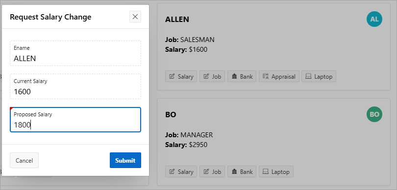
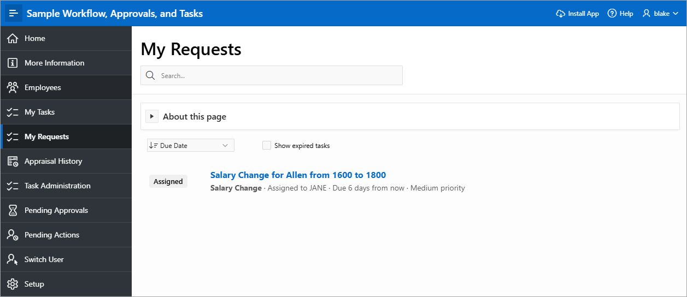
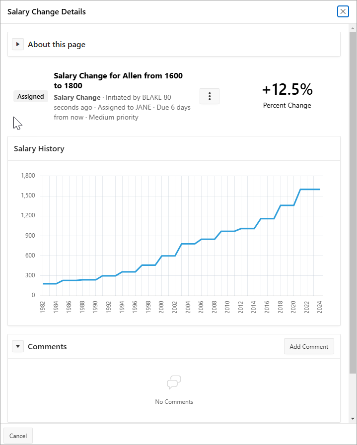

5.1 About Tasks
You can use tasks to approve, reject, or complete items. Depending on your role, you may be able to interact with tasks by leaving comments, submitting additional information, or updating due dates.
- Approval Tasks are tasks that you can approve or reject, as long as you are listed as the task owner. A task that asks you to approve or deny a laptop request for an employee is an approval task.
- Action Tasks are tasks that need to be actioned, but don't have any approval requirements. A task that asks an employee to fill in a self-evaluation is an action task.
- Unified Task List - A summary of your tasks that functions like an inbox.
- Task Details Page - A page that displays information specific to an individual task.
APEX creates tasks according to a task definition configured by the application developer. This ensures that each instance of a specific type of task (for example, an approval tasks for an employee's proposed job change) goes through the same process. The task definition specifies who is able to participate in specific types of tasks.
The actions you can take with tasks depend on the role you have as a task participant.
- About Task Participants
Task Participants can take action on tasks. A participant can be an initiator, owner, or business administrator. - About Task Due Dates
Developers can specify the due date for tasks. If a task has a due date, it may expire after that due date. Expired tasks may renew automatically. - About Task Actions
Task actions are any operations that you can do on a task instance, including editing the task details, approving or rejecting the task. or leaving a comment on the task. - About Task Details
The task details page displays information about a specific task instance.
Parent topic: Using Tasks
5.1.1 About Task Participants
Task Participants can take action on tasks. A participant can be an initiator, owner, or business administrator.
- As a Task Initiator, you can cancel your tasks, or update your task's priority. The actual owner of the task may ask you to provide more information about the task.
- As a Potential Owner, you can claim unassigned tasks to become the Actual Owner of those tasks. Tasks can have multiple potential owners. You cannot claim approval tasks that you initiated, but you can claim your own action tasks.
- As an Actual Owner, you can make changes to tasks you own, including requesting more information about the task from the initiator, delegating the task, and approving, rejecting, or completing the task. You can also update the values of the task parameters that are marked as updatable in the Task Definition. You may be able to own approval tasks you initiated, and you can always own action tasks you initiated.
- As a Business Administrator, you can manage tasks for a specific task definition by updating the task priority, changing the task due date, adding new potential owners, removing existing potential owners, canceling unneeded tasks, or renewing expired tasks. You cannot remove the actual owner of the task. You can also update the values of task parameters if they are marked as updatable in the task definition.
Tip:
Any changes you make only impact the individual task. You cannot modify the underlying task definition.
Each task has at least one potential owner and one business administrator.
Parent topic: About Tasks
5.1.2 About Task Due Dates
Developers can specify the due date for tasks. If a task has a due date, it may expire after that due date. Expired tasks may renew automatically.
Developers can configure tasks to have Due Dates. Due dates are normally set in the task definition. However, due dates can be overridden by a process type plugin. For more information, see About Creating Approval Process Plug-ins
- Stay in the owner's task list. The task is Overdue, and the owner can approve or reject the task at any time.
- Expire. The task is Expired and is no longer visible in the initiator's task list or the owner's task list. The business administrator can see expired tasks by selecting Show expired tasks, and can renew the task.
- Renew. The original task is Expired, and APEX automatically creates a new task with a new due date. After the task is automatically renewed a certain number of times, the task expires and does not renew automatically.
Parent topic: About Tasks
5.1.3 About Task Actions
Task actions are any operations that you can do on a task instance, including editing the task details, approving or rejecting the task. or leaving a comment on the task.
You can perform various actions on tasks. The actions you can do depend on the type of task, your role, and the task state. For example, you can't update tasks that are already completed, errored, or canceled. You also cannot approve or reject approval tasks that you initiated.
| Action | Initiator | Potential Owner | Actual Owner | Business Administrator |
|---|---|---|---|---|
| Claim | Yes, but only if you are also a potential owner. | Yes, if task is Unassigned.
Note: Depending on how the task is configured, you may be able to claim an approval task you initiated. |
No | No |
| Complete (Approve or Reject for approval tasks, and Complete for action tasks.) | Yes, but only if you are also the actual owner. | Yes, from the Task Details page by Claiming the task and then completing it, or directly from the Unified Task List for approval tasks.
Note: Depending on how the task is configured, you may be able to approve or reject an approval task you initiated. |
Yes, from the Task Details page, or directly from the Unified Task List for approval tasks.
Note: Depending on how the task is configured, you may be able to become the actual owner of an approval task you initiated. |
No |
| Delegate | No | No | Yes | Yes |
| Release | Yes, if you are also the actual owner for the task. | No | Yes | No |
| Cancel | Yes | No | No | Yes |
| Add Potential Owner | No | No | No | Yes |
| Remove Participant | No | No | No | Yes |
| Add Comment | Yes | Yes | Yes | Yes |
| Set Priority | Yes | No | No | Yes |
| Update Parameter | No | No | Yes | Yes |
| Request Information | No | No | Yes | No |
| Submit Information | Yes | No | No | No |
| Update Due Date | No | No | No | Yes |
| Renew | No | No | No | Yes, if the task is expired. Tasks can be manually renewed as many times as needed. |
Parent topic: About Tasks
5.1.4 About Task Details
The task details page displays information about a specific task instance.
The information in the task details page is more detailed than the information shown on the Unified Task List.
For example, say you use the Sample Workflows, Approvals, and Tasks app to put in a salary change request for Allen from 1600 to 1800.   
Description of the illustration sample_app_request_salary_change.png
The My Requests Unified Task List displays "Salary Change for Allen from 1600 to 1800" and indicates the task is assigned to Jane, due six days from now, with medium priority.
Description of the illustration sample_app_my_requests_task_list.png
Clicking on the task title to access the task details page provides more information about the task, including the task initiator, task owner, task due date, and task priority. The task details page also displays a graph of Allen's salary changes over time, and a space for comments.
Description of the illustration sample_app_salary_change_details.png
Parent topic: About Tasks